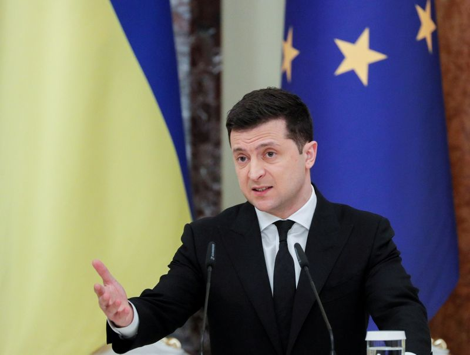

Ukraine says Putin won’t talk to Zelenskiy about Russian troop build-up despite request
Why would Putin waste his time talking to a puppet that Obozo and Bribem installed?
Posted On: 2021-04-13T00:00:00
Posted By: DoIJuly1776
Reuters should check their own newswires.The Normandy Four are arranging a summit and it was announced oops yesterday.FYI the Normandy Four are, Russia, Germany, France, Ukraine.The same folk that came up with the Minsk accord.
Posted On: 2021-04-13T00:00:00
Posted By: sr37212
Ukraine is a totally unimportant country, let's hope they will not start the III NUCLEAR World War.
Posted On: 2021-04-14T11:00:00
Posted By: American Patriot
LOL... they won't but, Plugs ineptness just might.
Posted On: 2021-04-14T17:00:00
Posted By: John Jones
Years ago, obama and another senator wrote passed a bill saying if you give up nukes we will protect you, now, ukraine was one of those areas that did, obama left them and so will biden.This would not happen with Trump.
Posted On: 2021-04-13T00:00:00
Posted By: mimsy
President Trump will never ever start the III NUCLEAR World War.
Posted On: 2021-04-14T11:00:00
Posted By: American Patriot
You are seemingly confused: Budapest Agreement never was ratified by the US Senate and as such is not a mandatory document and the only defense-related provision in it says that in the case of a NUCLEAR attack on Ukraine any of the signatories has a right to bring up the question.in the UN SC.
Trump was pushing a peaceful conflict resolution between Ukraine government and separatists but the attempt had been killed by 'Russia, Russia!'hysteria and by the pro-Ukrainian lobby in State Dept.(remember all these 'witnesses' of the Ukrainian descent?).
Posted On: 2021-04-14T18:00:00
Posted By: AM49
I see several glaring mistakes in this deep-state article.One, is that Zelinsky does not 'have a counterpart' in Russia.Putin was actually elected by a people voting for a legitimate government and Zelensky was installed by the junta who ousted the former legitimate Ukrainian government.
Zelensky is controlled by the western-bankers and Israel while Putin is not!
Posted On: 2021-04-13T00:00:00
Posted By: Draco
Take it easy with Israel.Israel is officially US ally but unofficially- friend of Russia.Even though they are Jews, many Israelis are Russians.You can't take away the Russian culture from a person
Posted On: 2021-04-13T00:00:00
Posted By: Ted
The first obvious question is why didn’t Zelensky try to have a dialog with the separatists?
The second question is since when a sovereign country needs somebody’s permission for moving troops on its own territory?
Posted On: 2021-04-14T18:00:00
Posted By: AM49
Ukraine is on its own...No NATO, No US... need to mobilize, like yesterday.
Posted On: 2021-04-14T17:00:00
Posted By: John Jones
Russia should just take what is theirs now.
Posted On: 2021-04-13T00:00:00
Posted By: Alan Langer

Content Date: 2021-04-13
Download Date: 2021-04-16
Document ID: L0C049UAD